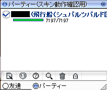
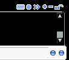
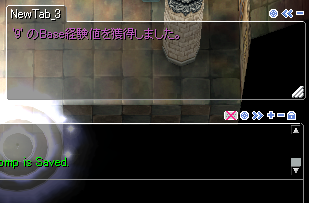

Skin>>実際にR化スキンパーツを作成する時の注意点？
実際にR化対応スキンを作るにあたっての注意点。
（注意が必要な物のみ記載）
・ 倉庫左タブ7種
各タブの文字の長さが違いすぎる為、デフォスキン通りに製作すると押しにくい、
又は違うタブが押されやすい状態になる事があるようです。
スキンスレ11の433にてzip配布中。
・ PT窓下部「mesbtn_06.bmp」「mesbtn_07.bmp」

「mesbtn_05.bmp」の右隣に表示されています。
クリックすると「mesbtn_06.bmp」から「mesbtn_07.bmp」に変わり、またクリックすると
「mesbtn_07.bmp」から「mesbtn_06.bmp」に変わる（同じ場所に表示される）ボタンです。
・ 会話ログ右上ボタン各種


Back
(c) Gravity Co., Ltd. & Lee MyoungJin(studio DTDS). All rights reserved.
(c) GungHo Online Entertainment, Inc. All Rights Reserved.
当コンテンツの再利用（再転載・配布など）は、禁止しています。